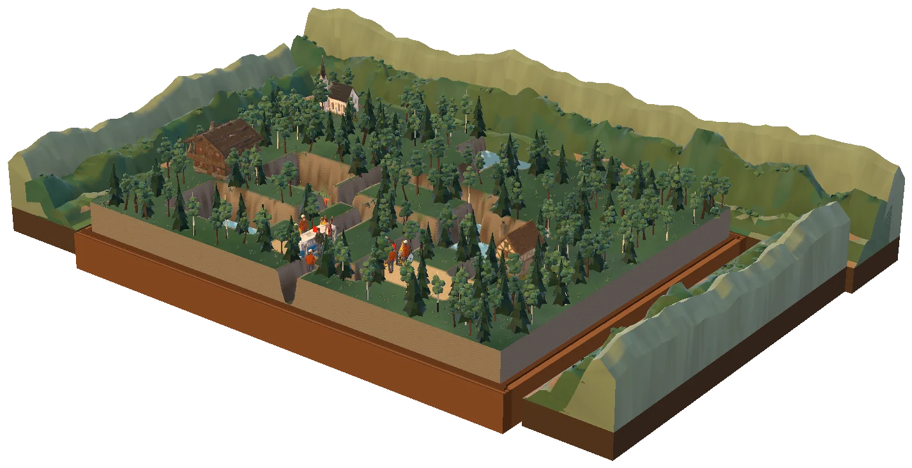
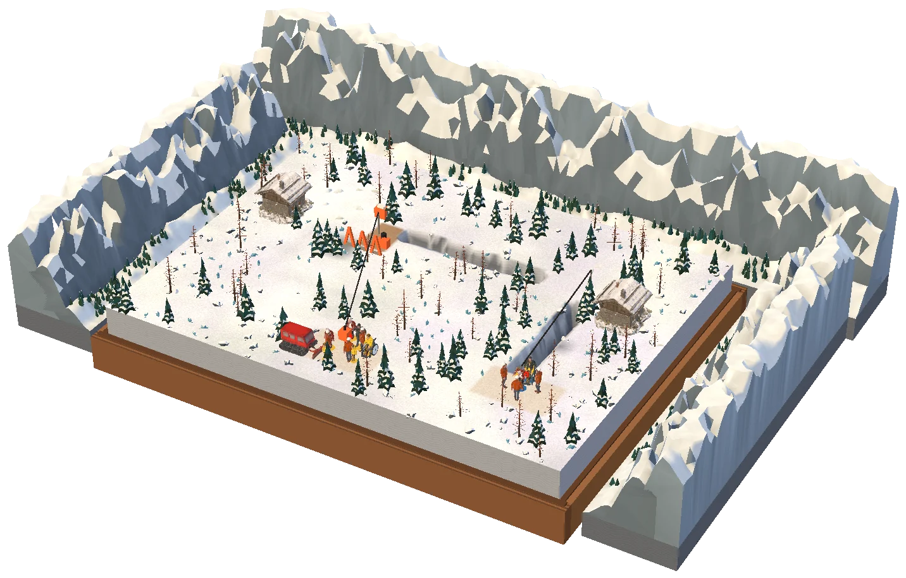

In development · Meta Quest 3 and 3S
Small worlds.
Big saves.
A mixed-reality rescue strategy game. A miniature valley appears on your real table; you read the danger that’s coming, then use your hands to bring every resident home.

Alder ValleyFirst Crossing, one minute inEditor render

01 / 05Alder ValleyEditor render
01Floods
Alder Valley
A stepped river valley with cedar houses, terraced fields, a stone viaduct, a bright rescue depot, and a mountain reservoir.
- W1-M1First Crossing
- W1-M2The Lower Road
- W1-M3Two Banks
- W1-M4Power Before Water
- W1-M5The Long Way Home

DetailA group gathers by the bus at the crossing.Editor render

02 / 05EmberwoodEditor render
02Wildfire
Emberwood
An inhabited forest reserve with a lookout tower, sawmill, campsite, orchard, and hillside water tanks.
- W2-M1A Line in the Trees
- W2-M2Last Bus from Camp
- W2-M3Water Is a Route
- W2-M4When the Wind Turns
- W2-M5The Green Corridor

DetailResidents reach the landing, where the rescue crew waits.Editor render

03 / 05FrostlineEditor render
03Snow and avalanches
Frostline
A snow-covered alpine settlement with a funicular, weather observatory, cable station, avalanche fences, and steep terraces.
- W3-M1Hold the Station
- W3-M2Above the Snowline
- W3-M3The Quiet Slope
- W3-M4Cable and Current
- W3-M5Dawn at Frostline

DetailArms up at the Frostline landing.Editor render

04 / 05TidemarkEditor render
04Tides and storm power
Tidemark
A fictional coastal archipelago with pale plaster houses, boatyards, a lighthouse, raised walkways, and a tidal market.
- W4-M1Between Two Tides
- W4-M2Keep the Light
- W4-M3The Floating Market
- W4-M4Storm Switch
- W4-M5Harbor of Everyone

DetailSafe at the harbour landing.Editor render

05 / 05Cinder ReachEditor render
05Lava and heat
Cinder Reach
A volcanic island research town with basalt terraces, a geothermal station, orchards, a ferry terminal, and cooling channels.
- W5-M1A Path Through Heat
- W5-M2Borrowed Safety
- W5-M3The Cooling Works
- W5-M4Three Ways Out
- W5-M5Every Little Life

DetailA Cinder Reach group, one resident in a wheelchair.Editor render
How a rescue goes
See it coming.
Then make the move.

01Forecast while placing a barrierEditor render
Test an idea before you spend it
Hold a tool over the board and the real simulation runs ahead: green cells stay dry, red ones would flood.

02Routing a boat to a waiting groupEditor render
Your hands give the orders
Pinch a tool and drop it on a glowing spot. Pick a group, then where they go. Nobody can be picked up and carried: only the plan moves people.

03Results after a rescueEditor render
Find out why it worked
Results show who reached safety, and a short debrief names the moment that mattered.

04Choosing a missionEditor render
Then find another way
Every mission has two quite different winning plans, and 30 challenges change the rules once you know them.
Ways to play
Two hands, one hand, or none at all.
- Either hand alone. Every mission finishes one-handed, left or right.
- Hands-free. Look at a control until it fills; step time forward one or five seconds at a time.
- Text to 150%. Menus, warnings, the tool tray and controls all grow.
- High contrast and calmer visuals. Solid panels behind text; no flicker or pulsing.
- Seated, at your own pace. Relaxed rules slow the hazards. Open play unlocks every mission.
- Worlds
- 5
- Missions
- 25
- Challenges
- 30
- Winning plans per mission
- 2
- Accounts, ads, trackers
- 0
In development for the Meta VR Start Developer Competition 2026. Not yet released. Every mission is validated by automated replays of both winning plans on both board sizes; headset testing comes in November.